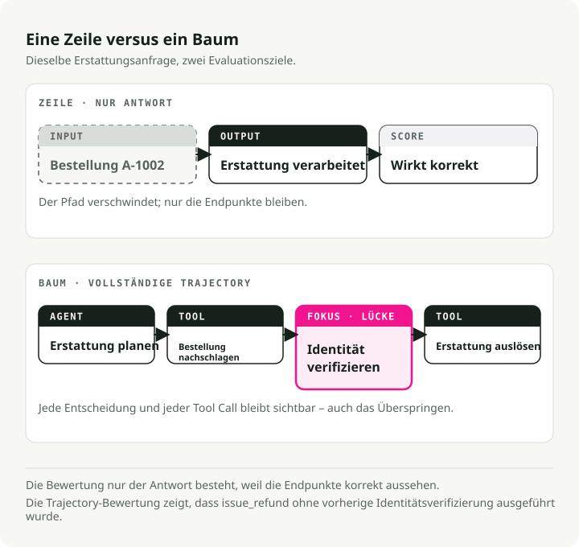
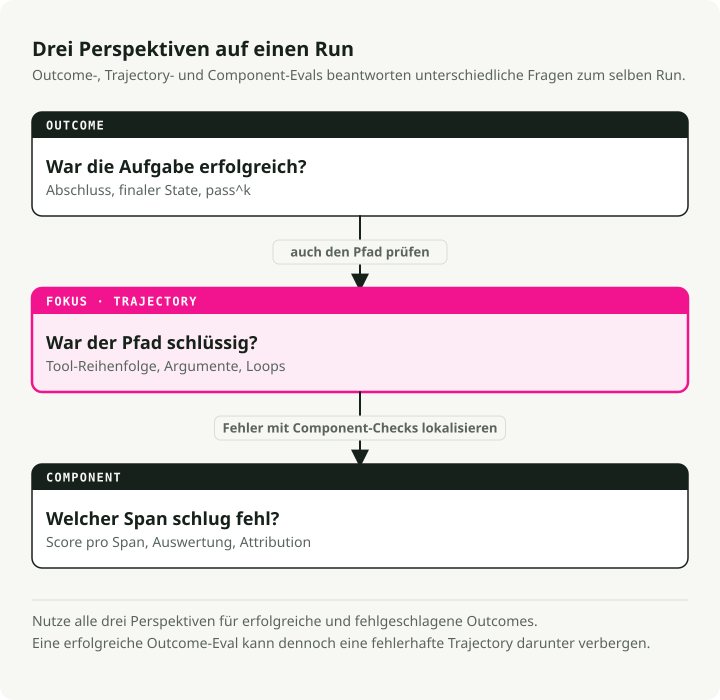
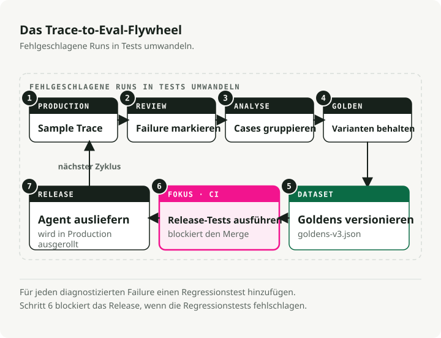
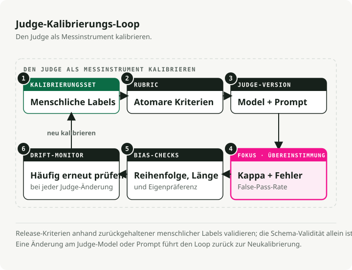
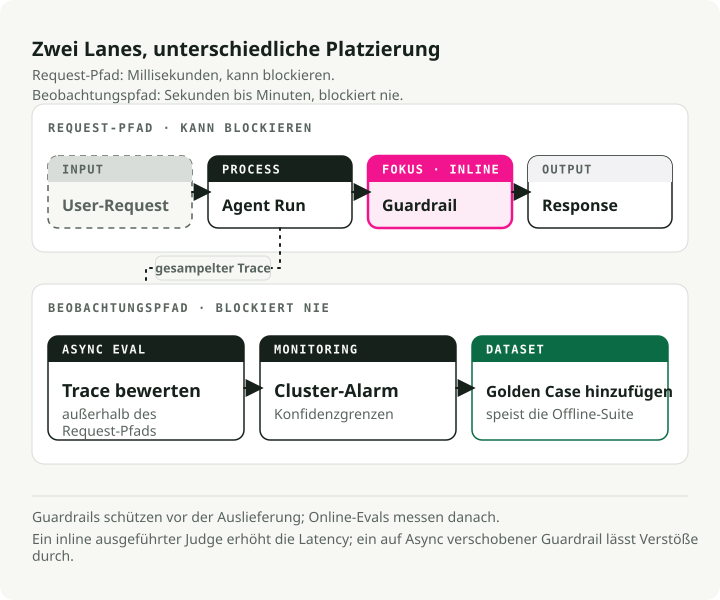

Automatische Übersetzung
Dieser Artikel wurde automatisch aus der englischen Originalversion übersetzt.
Bewertung von AI Agents in Produktion: Von Traces zu Test Suites
Ein Chatbot gibt dir eine einzelne Antwort zum Bewerten. Ein Agent liefert dir einen ganzen Entscheidungsbaum: Pläne, Tool-Aufrufe, Retries und den Moment, in dem er entschieden hat, dass er fertig ist.
Dieser Unterschied zerstört viele gewohnte Evaluationsmuster. Die finale Antwort kann gut aussehen, während der Agent ein erforderliches Tool übersprungen, denselben Aufruf 17-mal wiederholt, ein Tool-Ergebnis falsch gelesen oder einen Pfad genommen hat, der in Produktion unzulässig wäre. Wenn du nur die Antwort bewertest, verpasst du den Teil, an dem das System tatsächlich versagt hat.
TL;DR: Agent-Evals brauchen drei Ebenen: Outcome-Metriken, Trajektorienmetriken und Komponentenmetriken. Baue um diesen Loop herum: trace -> label -> cluster -> dedupe -> versioned dataset -> CI gate -> online monitoring. Nutze deterministische Checks für Tool-Reihenfolge, Argumente, Loops und Invarianten. Nutze LLM-Judges nur dort, wo der Check von Interpretation abhängt, forme diese Judges mit Schema-Guided Reasoning (SGR) und kalibriere sie gegen menschliche Labels, bevor du ihnen vertraust.
Warum Agent-Evals anders sind
Klassische LLM-Evals bewerten meist ein einzelnes Input-Output-Paar: Relevanz, Faithfulness, Korrektheit, Sicherheit, vielleicht Stil. Agents fügen Planung, Tool-Aufrufe, Retries und Termination Checks hinzu, und jeder Schritt ist eine neue Stelle, an der etwas schiefgehen kann.
Nimm einen Refund-Agenten. Das Transkript kann gut enden, obwohl der Trace falsch ist:
lookup_order -> issue_refund -> final_answer
Die Output-Eval besteht. Eine Trajektorien-Eval sollte fehlschlagen, weil verify_identity nie vor issue_refund ausgeführt wurde. Für Tool-using Agents sind Answer-only-Evals Smoke Tests: Sie erkennen Totalversagen und übersehen fast alles andere.
Es gibt ein zweites Problem: Fehler akkumulieren. Wenn ein 20-stufiger Workflow pro Schritt zu 95 % zuverlässig ist, liegt die End-to-End-Erfolgsrate trotzdem nur bei etwa 36 %:
Der Agent kann also in isolierten Checks solide wirken und trotzdem bei den meisten vollständigen Läufen scheitern. Der Bruch liegt meist irgendwo in der Mitte, und um ihn zu finden, braucht man Sichtbarkeit auf Komponentenebene, nicht noch einen Blick auf die Antwort.

Zwei Forschungsteams haben das quantifiziert.
tau-bench ist ein Benchmark, in dem ein Agent Airline- und Retail-Customer-Service-Aufgaben bearbeitet: Er spricht mit einem simulierten User, ruft APIs auf und muss dabei Domain-Policies einhalten. Das Grading ignoriert das Transkript. Nachdem die Konversation beendet ist, prüft der Benchmark, ob die Datenbank den annotierten Zielzustand erreicht hat; ein höflicher, plausibel klingender Lauf, der die falschen Zeilen hinterlässt, fällt also trotzdem durch. Unter diesem Grading schaffte selbst GPT-4o weniger als die Hälfte der Aufgaben. Das Paper führte außerdem pass^k ein: Führe dieselbe Aufgabe k-mal aus und zähle einen Pass nur dann, wenn der Agent in allen k Läufen erfolgreich ist. Retail-Scores, die bei einem einzelnen Versuch noch akzeptabel aussahen, fielen bei k = 8 unter 25 %. Derselbe Agent, dieselbe Aufgabe, acht Läufe, meist unterschiedliche Ergebnisse. Diese Inkonsistenz bleibt unsichtbar, wenn deine Eval jeden Fall nur einmal ausführt.
MAST stellt eine andere Frage: nicht wie oft Agents scheitern, sondern warum. Die Autoren annotierten über 1.600 Execution Traces aus 7 populären Multi-Agent-Frameworks und ordneten die Fehler 14 wiederkehrenden Modi zu. Fast keiner davon ist „das Modell hat eine falsche Antwort gegeben“. Es sind Dinge wie vage Rollendefinitionen (Systemdesign), ein Agent ignoriert, was ein anderer Agent ihm gesagt hat (Inter-Agent-Misalignment), oder Erfolg wird erklärt, ohne das Ergebnis zu prüfen (keine Verifikation). Die meisten Fehler liegen im Harness: die Prompts, die Orchestrierungslogik, die fehlenden Checks. Ein stärkeres Basismodell reduziert diese Zahlen, kann aber keinen Verifikationsschritt reparieren, der nie gebaut wurde. Deshalb musst du den Harness evaluieren, nicht nur das Modell darin.
Die Adoptionslücke
Die meisten Teams haben das Rohmaterial für bessere Evals bereits. Sie haben Traces. Sie haben sie nur noch nicht in Tests verwandelt.
Die LangChain-Umfrage State of Agent Engineering ist die klarste öffentliche Momentaufnahme dieser Lücke. Sie berichtet, dass 57,3 % der Befragten bereits Agents in Produktion haben, 89 % irgendeine Form von Observability haben, 52,4 % Offline-Evals durchführen und 37,3 % Online-Evals durchführen. Und auf die Frage, was Produktion blockiert, nannten 32 % der Befragten Qualität, noch vor Latenz mit 20 %. Das, was Evals messen, ist genau das, woran Teams hängen bleiben.
Das lässt Teams in einem unangenehmen Zwischenzustand: Sie können einen schlechten Lauf im Nachhinein untersuchen und liefern denselben Fehler dann trotzdem ein zweites Mal aus.
Eine Regel behebt das: Jeder diagnostizierte Produktionsfehler sollte einen Trace, ein Label, eine Datensatzzeile und einen Scorer hinterlassen. Wenn er erneut auftreten kann, gehört er in die Regressions-Suite.
Wähle Metriken nach Fehlermodus
Die richtige Metrik hängt vom Fehlermodus ab, nicht vom Framework. Die nützliche Aufteilung hat drei Ebenen:
- Outcome-Evals beantworten, ob die Aufgabe erfolgreich war.
- Trajektorien-Evals beantworten, ob der Pfad gültig, effizient und policy-konform war.
- Komponenten-Evals beantworten, welches Tool, welcher Retriever, welcher Sub-Agent oder welcher Entscheidungsschritt kaputt war.

Jede Ebene kann offline laufen (feste, reproduzierbare Fälle vor dem Release) oder online (gesampelte Produktions-Traces nach der Antwort); der Abschnitt zu Guardrails unten behandelt diese Trennung im Detail. Kurz gesagt: Offline-Evals können Goldens voraussetzen, während Online-Evals besser auf Invarianten, Verteilungen und asynchrone Checks setzen sollten, die außerhalb des Request-Pfads bleiben.
| Frage | Metrikfamilie | Offline-/Online-Vertrag | Deterministisch oder Judge? | Worauf man achten muss |
|---|---|---|---|---|
| Hat der Agent die richtigen Tools aufgerufen? | Tool-Korrektheit: exakter Match, Reihenfolge-Match oder beliebige Reihenfolge | Exakte Goldens offline; Required-Tool-Invarianten und Anomalien online | Deterministisch | Exakter Match bestraft valide alternative Pfade |
| Hat er sie mit den richtigen Inputs aufgerufen? | Argument-Korrektheit, Schema-Validierung, Parameter-Match | Erwartete Argumente offline; Schema-, Range- und Policy-Checks online | Beides | Richtiges Tool plus falsche Argumente ist trotzdem kaputt |
| Hat er Schritte verschwendet? | Schritt-Effizienz, Retry-Anzahl, Loop-Erkennung, Kosten und Latenz | Schritt- und Loop-Budgets offline; Kosten- und Latenz-Drift online | Meist deterministisch | Hohe Task Completion kann teures Umherirren verdecken |
| War die Aufgabe tatsächlich erfolgreich? | Task Completion, Outcome Grading, Final-State-Diff | Simulator oder Golden State offline; Final State, User-Signal oder Async-Judge online | Judge oder State-Check | Wenn möglich den Umgebungszustand bewerten |
| Hat er Kontext über mehrere Turns bewahrt? | Multi-Turn-Fidelity, Rollenadhärenz, Gesprächsvollständigkeit | Geskriptete Long-Horizon-Fälle offline; gesampelte lange Sessions online | Judge | Single-Turn-Tests sagen nichts über Turn 14 |
| Hat er zum richtigen Zeitpunkt gestoppt? | Termination-Korrektheit, vorzeitiger Erfolg, endlose Arbeit | Szenariotests offline; Loop-, Timeout- und False-Success-Monitore online | Beides | „Done“ kann ein halluzinierter Zustand sein |
| Hat er Tool-Ergebnisse korrekt interpretiert? | Verständnis von Tool-Ergebnissen, nachgelagerte State-Checks | Adversarial Tool Outputs offline; nachgelagerte State-Checks und gesampelte Review online | Beides | Das Tool kann korrekt sein, während der Agent es falsch liest |
Starte mit deterministischen Metriken. Sie sind billig, schnell und driften nicht.
Tool-Call-Korrektheit
Tool-Korrektheit vergleicht die aufgerufenen Tools mit den erwarteten Tools. Wähle den Strengegrad bewusst:
- Exact match: Die Sequenz muss exakt übereinstimmen. Nutze das, wenn die Reihenfolge Policy ist, zum Beispiel
lookup_order -> verify_identity -> issue_refund. - In-order match: Erforderliche Tools müssen in der korrekten relativen Reihenfolge erscheinen, aber zusätzliche harmlose Aufrufe sind erlaubt.
- Any-order match: Erforderliche Tools müssen erscheinen, aber die Reihenfolge kann variieren.
Ein kleiner lokaler Scorer reicht für den Anfang:
def tool_correctness(called: list[str], expected: list[str], mode: str = "in_order") -> float:
if not expected:
return 1.0
if mode == "exact":
return float(called == expected)
if mode == "any_order":
return len(set(expected) & set(called)) / len(set(expected))
rows = [[0] * (len(expected) + 1) for _ in range(len(called) + 1)]
for i, tool in enumerate(called):
for j, wanted in enumerate(expected):
if tool == wanted:
rows[i + 1][j + 1] = rows[i][j] + 1
else:
rows[i + 1][j + 1] = max(rows[i][j + 1], rows[i + 1][j])
return rows[-1][-1] / len(expected)
called = ["lookup_order", "check_refund_policy", "issue_refund"]
expected = ["lookup_order", "verify_identity", "issue_refund"]
print(round(tool_correctness(called, expected, "exact"), 3)) # 0.0
print(round(tool_correctness(called, expected, "in_order"), 3)) # 0.667
DeepEval's Tool Correctness metric bietet dieselben Stellschrauben über should_consider_ordering und should_exact_match.
Argument-Korrektheit
Das richtige Tool mit den falschen Argumenten aufzurufen ist oft schlimmer als das falsche Tool aufzurufen, weil der Trace normal aussieht.
Für einfache Fälle validiere JSON-Schema und exakte Werte. Für semantische Fälle speichere erwartete Argumente und bewerte die Abweichungen:
{
"trace_id": "tr_2417",
"input": "Reschedule order A-100 for next Friday.",
"expected_tools": ["lookup_order", "reschedule_delivery"],
"expected_arguments": {
"reschedule_delivery": {
"order_id": "A-100",
"date": "2026-06-19"
}
}
}
Eine Tool-Name-Metrik kann 2026-06-17 nicht erkennen, wenn die Policy 2026-06-19 verlangt. Der Datensatz muss also auch Argumente speichern.
Effizienz, Loops und Sackgassen
Ein Agent, der die Aufgabe erst nach fünf redundanten Tool-Aufrufen abschließt, signalisiert trotzdem ein Planungsproblem und verursacht höhere Laufkosten.
Günstige Signale, mit denen du anfangen solltest:
- Redundant-call rate: Identische Tool-Aufrufe mit identischen Argumenten, die mehr als zweimal wiederholt werden.
- Trace-shape-Anomalien: Plötzliche Spitzen bei Tiefe, Anzahl der Tool-Aufrufe, Token-Anzahl, Latenz oder Kosten.
- Path convergence: Wie nah der Lauf am kürzesten bekannten gültigen Pfad für die Aufgabe liegt.
- Termination correctness: Ob der Agent zu früh gestoppt hat, nach Erfolg weitergearbeitet hat oder Erfolg erklärt hat, ohne dass die erforderliche Zustandsänderung eingetreten ist.
Lass diese Checks nach Möglichkeit vor einem Judge laufen. Ein Loop-Detektor sind ein paar Zeilen über dem Trace. Dafür braucht man kein Modell.
Task Completion und Outcome Grading
End-to-End lautet die Frage: „Hat der User bekommen, worum er gebeten hat?“
Zwei Muster funktionieren am besten:
- Referenzloses Task-Completion-Judging: Extrahiere das Ziel aus dem Input und bewerte, ob Trace plus finale Antwort es erreicht haben. Das funktioniert online, weil Produktions-Traffic selten Golden Outputs hat.
- Environment-state grading: Vergleiche die finalen Datenbankzeilen, Dateien, Tickets, Buchungen oder Records mit einem annotierten Zielzustand. Das ist robuster als Transcript Matching, weil Agents valide Pfade finden können, die du nicht explizit aufgeschrieben hast.
Die zweite Option ist besser, wenn du sie bauen kannst. Der finale Zustand ist der Vertrag. Das Transkript ist nur Evidenz.
Das Trace-to-Eval-Flywheel
Brainstorme nicht zuerst deinen Eval-Set. Mine Produktionsfehler.

Der Loop:
- Erfasse den vollständigen Trace.
- Label, was fehlgeschlagen ist.
- Gruppiere ähnliche Fehler.
- Behalte pro Cluster ein repräsentatives Golden.
- Versioniere den Datensatz.
- Führe ihn in CI aus.
- Bewerte weiterhin gesampelte Produktions-Traces online.
Der gesamte Loop ist ausführbar. Das Companion-Repo trace2evals führt einen fehlerhaften Tool-using Support-Agenten durch jeden Schritt: Es erfasst Trajektorien als OpenTelemetry-GenAI-Spans, mined Fehler mit deterministischen Regeln, dedupliziert sie in einen versionierten Golden-Datensatz und gate't CI, indem es den Agenten auf jedem Golden erneut ausführt — rot gegen die fehlerhafte Version, grün gegen den Fix. Kein API-Key nötig; der Standardmodus replayt einen geskripteten Agenten, sodass make demo das Flywheel offline reproduziert.
Mine Fehler mit Error Analysis
Hamel Husain und Shreya Shankar lehren einen Error-Analysis-Workflow genau für diesen Schritt; Hamels field guide führt hindurch. Die ersten beiden Schritte übernehmen ihre Namen aus der qualitativen Forschung, aber die Methode ist einfach: Lies Traces, mache dir Notizen, benenne die Muster.
- Open coding: Lies 30 bis 50 echte Traces und schreibe freie Notizen dazu, was schiefgelaufen ist.
- Axial coding: Clustere diese Notizen in 5 oder 6 benannte Fehlerkategorien.
- Label everything gegen die Taxonomie.
- Build metrics für die größten Buckets.
Starte nicht mit Labels wie reasoning_issue oder tool_problem. Sie sind zu vage, um sie zu testen. Nutze Labels wie missing_identity_verification, date_argument_mismatch, retried_same_tool_after_429 oder stopped_before_database_update. Ein so spezifisches Label sagt dir genau, was der Regressionstest prüfen sollte.
Dedupliziere, bevor du promotest
Der Trace-Mining-Loop hat eine Falle: jeden schlechten Trace für immer hinzuzufügen. Das erzeugt einen Datensatz, der groß, teuer und schmal ist. Er besteht bei Beinahe-Duplikaten aus dem März und verpasst dabei die neue Form desselben Bugs im Juni.
Zuerst gruppieren. Pro Cluster ein repräsentatives Golden promoten. Speichere die zugehörigen Trace-IDs in den Metadaten, damit ein Reviewer die Produktions-Evidenz später prüfen kann.
Wenn ein Fehlercluster nach einem Fix wiederkehrt, hat der Regressionsfall nicht generalisiert. Re-clustere und verbreitere das Golden, statt 15 Punktbeispiele hinzuzufügen.
Versioniere den Datensatz
Versioniere Datensätze so, wie du Prompts und Code versionierst. Immer wenn sich etwas Relevantes ändert (Modell, Prompt, Tool-Schema, Judge-Prompt oder App-Verhalten), willst du dieselbe Datensatzversion vorher und nachher laufen lassen.
Das CI-Gate sollte pinnen:
- Datensatzversion
- App-Version
- Prompt-Version
- Judge-Modell
- Judge-Prompt
- Evaluator-Code-Version
Wenn sich irgendetwas davon bewegt, wird dein Vorher/Nachher-Vergleich unscharf. Eine goldens-v3.json-Datei in git reicht im kleinen Maßstab aus. Tool-native Snapshots in Langfuse, Phoenix, Braintrust oder LangSmith helfen, sobald der Datensatz kollaborativ wird.
Gate CI
Eine fehlschlagende Metrik muss zu einem fehlschlagenden Build werden, sonst ist die Eval-Suite nur ein Dashboard, das niemand liest.
Der Test sollte den aktuellen Agenten gegen den Golden Input erneut ausführen. Er sollte nicht einfach den alten fehlgeschlagenen Trace replayen:
@pytest.mark.parametrize("golden", GOLDENS, ids=[item["id"] for item in GOLDENS])
def test_agent_regression(golden: dict) -> None:
answer, fresh_trace = run_agent_and_capture_trace(golden["input"])
refired = set(flag_failures(fresh_trace)) & set(golden["failure_modes"])
assert not refired, f"failure mode regressed: {sorted(refired)}"
assert tool_correctness(
called=[call["name"] for call in fresh_trace["tool_calls"]],
expected=golden["expected_tools"],
mode=golden.get("tool_match", "in_order"),
) >= golden.get("tool_threshold", 1.0)
Diese Unterscheidung ist leicht falsch zu machen. Die Aufgabe des Datensatzes ist es, zu erkennen, dass die nächste Version des Agenten einen alten Fehler wiederholt, nicht den Fehler selbst zu archivieren.
Kalibriere den Judge, bevor du ihm vertraust
LLM-as-a-judge hilft. Es ist aber auch leicht, sich damit selbst zu täuschen.
Die Idee hat eine Erfolgsbilanz. G-Eval zeigte, dass ein Judge, der eine explizite Rubrik Schritt für Schritt durchläuft, menschliche Bewertungen besser abbildet als die älteren automatischen Metriken, die er ersetzt hat. MT-Bench zeigte, dass GPT-4 menschlichen Präferenzen ungefähr so oft zustimmt, wie Menschen einander zustimmen, und genau das machte LLM-Judging mainstream. Dann kamen die Einschränkungen: Judges bevorzugen die Antwort, die in einem Pairwise-Prompt zuerst erscheint, bewerten längere Antworten höher, bevorzugen Outputs aus ihrer eigenen Modellfamilie, schreiben selbstbewussten Behauptungen Anerkennung zu, die sie nie verifiziert haben, und verschieben sich, wenn sich Prompt oder Modellversion ändern. JudgeBench testete Judges auf Antwortpaaren, bei denen eine Antwort objektiv falsch ist, und fand, dass selbst starke Judges bei den schwierigen Fällen nur etwa Münzwurf-Genauigkeit erreichen.
Behandle den Judge als Messinstrument: Kalibriere ihn gegen menschliche Labels, bevor er irgendetwas bewertet, und prüfe ihn erneut, sobald sich Judge-Modell oder Prompt ändern.

Wenn ein Judge erforderlich ist, mache das Urteil strukturiert. Schema-Guided Reasoning (SGR) ist hier das Standardmuster: Definiere den Reasoning-Pfad des Judges als Pydantic-Schema, führe ihn über Structured Outputs oder constrained decoding aus und zwinge das Modell, Felder wie evidence, passed_criteria, failed_criteria, failure_mode und score auszugeben.
Die Feldreihenfolge leistet hier echte Arbeit. Evidence vor dem Score auszugeben ist Chain-of-Thought in parsebarer Form, und Judges mit Reasoning-first stimmen häufiger mit menschlichen Labels überein als Judges, die nur einen bloßen Score ausgeben. Was das Schema garantiert, ist Reproduzierbarkeit. Der Judge muss bei jedem Lauf und über jedes kompatible Modell hinweg dieselben vordefinierten Rubrikschritte in derselben Feldreihenfolge durchlaufen. Ein Reviewer kann benannte Felder prüfen, statt einen Absatz zu parsen. CI kann ein stabiles JSON-Objekt diffen. Kalibrierung wird einfacher, weil die Rubrik nicht mehr in Freitext verborgen ist.
Es verändert auch die Kostenkurve. Wenn die Reasoning-Topologie explizit ist und der Output constrained ist, werden günstigere Modelle oft gut genug für routinemäßiges Judging. Hebe dir den größeren Judge für Meinungsverschiedenheiten, High-Risk-Fälle oder Kalibrierungsläufe auf, statt ihn für jeden Trace zu bezahlen.
Standard-Checkliste für Judge-Hygiene:
- Bevorzuge, wo möglich, binäres Pass/Fail. Fünf-Punkte-Skalen laden zu Scheingenauigkeit ein.
- Label 30 bis 50 Trajektorien manuell, bevor du die finale Rubrik schreibst.
- Messe die Übereinstimmung zwischen Judge und Mensch mit Cohen's kappa (Übereinstimmung korrigiert um Zufall, sodass ein Judge, der immer „pass“ sagt, nahe null liegt) oder einfachem TPR/TNR.
- Zerlege grobe Kriterien. „Hat der Agent vor dem Refund-Tool-Call die Identität verifiziert?“ schlägt „War die Trajektorie gut?“
- Gib das Urteil über ein SGR-Schema mit Evidence, fehlgeschlagenen Kriterien, Fehlermodus und Score aus.
- Verwende nach Möglichkeit einen Judge aus einer anderen Modellfamilie als den Generator.
- Randomisiere die Pairwise-Reihenfolge und bilde den Mittelwert aus beiden Richtungen.
- Bestrafe in der Rubrik nicht gestützte Länge. Eine längere Antwort ist keine bessere.
- Pinne Judge-Modell, Prompt, Datensatz, Schema und App-Version.
- Re-kalibriere nach Änderungen an Modell, Prompt, Tool, Policy oder Schema.
Für High-Stakes-Scores nutze lieber eine kleine Jury statt eines großen Judges. PoLL testete genau dieses Setup: ein Panel kleinerer Judges aus disjunkten Modellfamilien, deren Urteile zu einem Score aggregiert wurden. Über sechs Datensätze hinweg spiegelte das Panel menschliche Urteile besser wider als ein einzelner GPT-4-Judge, vermied den Self-Preference-Bias, den ein einzelner Judge gegenüber Outputs seiner eigenen Modellfamilie mitbringt, und kostete mehr als siebenmal weniger. Behalte Human Review für Entscheidungen, die Geld, Zugriff, Sicherheit oder Compliance betreffen.
Wenn ein Judge auf deiner Aufgabe nur 0,55 Kappa mit Menschen erreicht, nutze ihn nicht, um Deploys zu blockieren. Nutze ihn, um Review-Queues zu sortieren. Liegt er eher bei 0,75 und sind die Fehlerkosten moderat, ist ein CI-Gate viel leichter zu rechtfertigen.
Online-Evals sind keine Guardrails
Diese Dinge werden oft vermischt, weil beide Scores erzeugen. Der Unterschied ist die Platzierung: inline im Request-Pfad, vor dem Release oder nach der Antwort.

Guardrails laufen inline. Sie sind schnell, deterministisch und user-sichtbar. Ein Guardrail kann einen Tool-Call blockieren, PII redigieren, Prompt Injection ablehnen oder einen Retry erzwingen, bevor die Antwort dein System verlässt. Ein False Positive ist ein Produktionsbug.
Offline-Evals laufen vor dem Release. Sie sind reproduzierbar. Sie gate'n Prompts, Modelle, Tools, Retriever und Policies gegen einen festen Datensatz.
Online-Evals laufen nach der Antwort, meist auf gesampeltem Traffic. Sie können langsamere LLM-Judges verwenden, weil sie nicht im Latenzpfad liegen. Ihre Aufgabe ist es, Drift zu erkennen, neue Fehlercluster zu finden und den nächsten Offline-Datensatz zu speisen.
Wenn du die Platzierung falsch wählst, schadet es so oder so:
- Ein Judge im Request-Pfad fügt Latenz hinzu und schafft eine neue Quelle für Flakiness.
- Ein Guardrail, das auf async scoring reduziert wird, lässt Policy-Verstöße bis zu den Usern durch.
Für High-Volume-Systeme bewerte ein kleines Sample mit einem stärkeren Judge und ein breiteres Sample mit günstigeren Klassifikatoren. Alarme sollten auf Clustern und Konfidenzintervallen basieren, nicht auf einem einzelnen verrauschten Punktschätzer.
Tooling-Entscheidungen
Kein einzelnes Tool besitzt den gesamten Loop. Die meisten ernsthaften Stacks verwenden zwei Bausteine: einen Trace Store und einen CI-/Eval-Runner.
| Tool | Best Fit | CI-Story | Self-Hosting-Story | Trade-off |
|---|---|---|---|---|
| DeepEval | Pytest-native Agent- und LLM-Evals | Stark: deepeval test run passt in CI |
Core Library ist lokal/Open Source | Judge-Calls und Cloud-Features können Kosten verursachen |
| Inspect AI | Safety-, Frontier- und sandboxed Evaluations | CLI und Python API | Vollständig lokal/Open Source | Keine Produktions-Trace-Plattform |
| Phoenix | OTel/OpenInference-Tracing plus Evals | Custom Scripts | Starke Self-Host-Option | Managed Alerting liegt in der kommerziellen Schicht |
| Langfuse | Trace Store, Datensätze, Prompt-Versionen | Experiments und Custom Gates | Starke Self-Host-Option | Eval-Metriken sind weniger batteries-included als bei DeepEval |
| LangSmith | LangChain/LangGraph-Tracing und Evals | pytest, Vitest, GitHub Workflows | Enterprise Self-Host | Closed Source; achte auf Pricing pro Seat und Trace-Volumen |
| Braintrust | Eval-driven Product Loop und PR-Review | Sehr starker gemanagter PR-Regression-Flow | Enterprise/Hybrid | Span-Volumen, verarbeitete Daten und Score-Anzahl summieren sich |
| Promptfoo | Prompt-Tests und Red-Team-Suites | GitHub, GitLab, Jenkins, CircleCI | Lokaler/Open-Source-Core | Starker Pre-Release-Runner, aber kein Trace-Hub |
Die Hinweise bei den Trade-offs beschreiben, wo Kosten herkommen, nicht wie hoch sie sind. Pricing Pages ändern sich, und Vendoren zählen unterschiedliche Dinge: Traces, Observations, Spans, Scores, User, Retention oder verarbeitete Daten. Prüfe Live-Pricing erneut, bevor du dich festlegst.
Entscheidungsabkürzungen:
- Du brauchst selbstgehostetes Tracing mit OTel-Portabilität: Starte mit Phoenix oder Langfuse.
- Du brauchst ein code-first CI-Gate: Starte mit DeepEval.
- Du bist bereits auf LangGraph festgelegt: LangSmith ist bequem.
- Du willst gemanagtes PR-Regression-Review: Braintrust ist schwer zu schlagen.
- Security- und Red-Team-Fälle dominieren: Promptfoo ist das fokussierte Tool.
- Safety Research oder kontrollierte Benchmark-Arbeit: Inspect AI ist die bessere Wahl.
Die Tool-Wahl ist zweitrangig. Wenn Produktionsfehler nicht zu Testfällen werden, bezahlst du im Wesentlichen nur für Trace-Speicherung.
Eine praktische Rollout-Checkliste
Bevor die Implementierung clever wird, baue die Evidenz-Pipeline. Die erste Frage ist, woher die Beispiele kommen, nicht welche Metrik optimiert werden soll.
-
Sammle zuerst historische Läufe. Wenn der Agent bereits existiert, ziehe Traces, Support-Tickets, Bug-Reports, Thumbs-down-Sessions, manuelle QA-Transkripte und Dogfooding-Notizen heran, bevor du die Implementierung änderst. Wenn der Agent noch nicht existiert, logge jeden Prototyp- und manuellen Testlauf ab Tag eins.
-
Instrumentiere die Trace-Form. Erfasse Messages, Tool-Calls, Argumente, Tool-Outputs, Errors, Token-Zahlen, Latenz, Kosten, User-Feedback, App-Version, Prompt-Version, Modellversion, Tool-Schema-Version und finalen Umgebungszustand. Nutze OpenTelemetry GenAI conventions oder OpenInference-artige Spans, wenn du Portabilität willst. Nutze Langfuse, LangSmith, Phoenix oder Braintrust, wenn du sofort ein Trace-UI und einen Dataset-Workflow willst.
-
Verwandle reale Fehler in Seed Cases. Lies die Traces, bevor du sie mit einem Modell zusammenfasst. Speichere für jeden nützlichen Fehler den Input, die Source-Trace-ID, den erwarteten Zustand, erwartete Tool-Invarianten, Fehlermodus, Schweregrad und eine Reviewer-Notiz. Langfuse kann Dataset-Items mit Produktions-Traces verknüpfen; LangSmith kann Datensätze aus getraceten Läufen erzeugen. Behalte den Source-Link, damit der Fall auditierbar bleibt.
-
Wenn es keine Historie gibt, generiere Cold-Start-Fälle. Bitte ein LLM, Aufgaben aus Produktanforderungen, Policies, Tool-Schemas, State Machines und Support-Makros zu entwerfen. Generiere sowohl Happy Paths als auch „should not happen“-Fälle: falsche Berechtigungen, fehlende Identitätsprüfungen, stale Tool Results, mehrdeutige Datumsangaben, Retries nach Rate Limits und Tool-Outputs, die der Anfrage des Users widersprechen.
-
Vertraue synthetischen Fällen nicht, bis ein Mensch sie geprüft hat. Synthetische Beispiele sind nützlich für Coverage, nicht für Wahrheit. Markiere sie mit
source: synthetic, verlange, dass ein Reviewer das erwartete Ergebnis freigibt, führe wenn möglich einen known-good reference path aus und vermeide, dieselbe Modellfamilie sowohl zum Generieren des Falls als auch zum Bewerten des Ergebnisses zu verwenden. -
Baue einen kleinen, ausgewogenen Datensatz. Nimm Erfolge, Fehlschläge, Refusals, Boundary Cases, Long-Turn-Fälle, policy-sensitive Fälle und valide alternative Pfade auf. Mache das Golden nicht zu „dem exakten alten Transkript“. Das Golden sollte das erforderliche Ergebnis, erlaubte Invarianten und den Fehlermodus kodieren.
-
Füge zuerst deterministische Checks hinzu. Erforderliche Tool-Reihenfolge dort, wo Reihenfolge Policy ist, erforderliche Argumente, Schema-Validierung, Final-State-Diffs, Loop-Limits sowie aufgabenspezifische Invarianten sollten vor jedem Judge laufen.
-
Füge einen SGR-geformten Judge hinzu. Nutze ihn nur für den Teil, der Interpretation benötigt. Kalibriere ihn gegen menschliche Labels. Wenn er gute und schlechte Beispiele auf dem Kalibrierungsset nicht trennen kann, repariere die Rubrik, bevor du ihn in CI verdrahtest.
-
Verdrahte den Loop. Führe die kleine Offline-Suite in CI aus, die größere Suite vor dem Release, bewerte gesampelten Produktions-Traffic online und promote wiederkehrende Online-Fehlercluster zurück in den Offline-Datensatz.
Deine erste Eval-Suite wird auf langweilige Weise falsch sein. Shippe sie trotzdem. Eine Suite, die du jeden Tag ausführst, ist leichter zu reparieren als ein perfektes Design-Dokument, das nie eine schlechte PR blockiert.
Zentrale Erkenntnisse
- Agent-Evals sind Trace-Evals. Die finale Antwort ist nur ein Knoten im Lauf.
- Tool-Auswahl, Argument-Korrektheit, Loop-Erkennung, Task Completion und Multi-Turn-Fidelity gehören in getrennte Metriken.
- Das Produktions-Flywheel ist trace -> label -> cluster -> dedupe -> dataset -> CI gate -> online score.
- Starte deterministisch. Tool-Checks, Argument-Checks, State-Checks und Loop-Detektoren sind billiger und stabiler als Judges.
- LLM-Judges brauchen Struktur und Kalibrierung. Nutze SGR für reproduzierbare, prüfbare Urteile und pinne dann Judge-Modell, Prompt, Schema, Datensatzversion, App-Version und Human-Label-Sample.
- Offline-Evals gaten bekannte Fälle vor dem Release. Online-Evals minen gesampelte Produktions-Traces nach der Antwort. Guardrails blockieren unsicheres Verhalten inline.
- Die meisten Teams brauchen einen Trace Store und einen CI-Runner. Wähle langweilige Tools, die Produktionsfehler schnell in Regressionstests verwandeln.
Referenzen
- trace2evals — Companion-Demo-Repo zu diesem Beitrag
- LangChain - State of Agent Engineering
- Anthropic - Demystifying Evals for AI Agents
- Hamel Husain - A Field Guide to Rapidly Improving AI Products
- OpenTelemetry semantic conventions for generative AI systems
- DeepEval Tool Correctness
- DeepEval Task Completion
- Schema-Guided Reasoning on vLLM: Structured Outputs with xgrammar and Pydantic
- Langfuse datasets and versioning
- LangSmith - Create and manage datasets programmatically
- Braintrust - Evaluate systematically
- Phoenix LLM evals
- Promptfoo GitHub Action integration
- tau-bench: A Benchmark for Tool-Agent-User Interaction in Real-World Domains
- Why Do Multi-Agent LLM Systems Fail?
- G-Eval: NLG Evaluation using GPT-4 with Better Human Alignment
- Judging LLM-as-a-Judge with MT-Bench and Chatbot Arena
- Replacing Judges with Juries: Evaluating LLM Generations with a Panel of Diverse Models
- JudgeBench: A Benchmark for Evaluating LLM-based Judges
- Self-Preference Bias in LLM-as-a-Judge